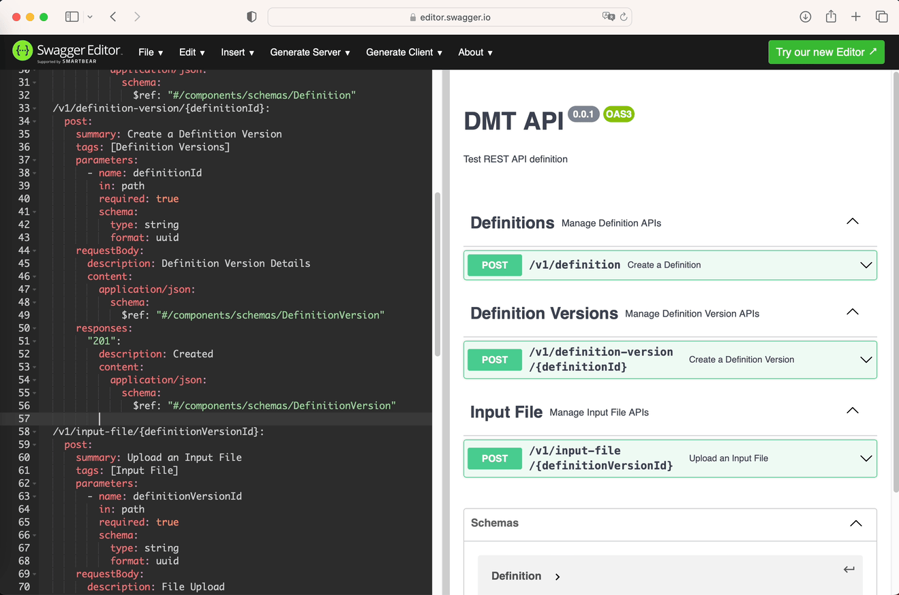
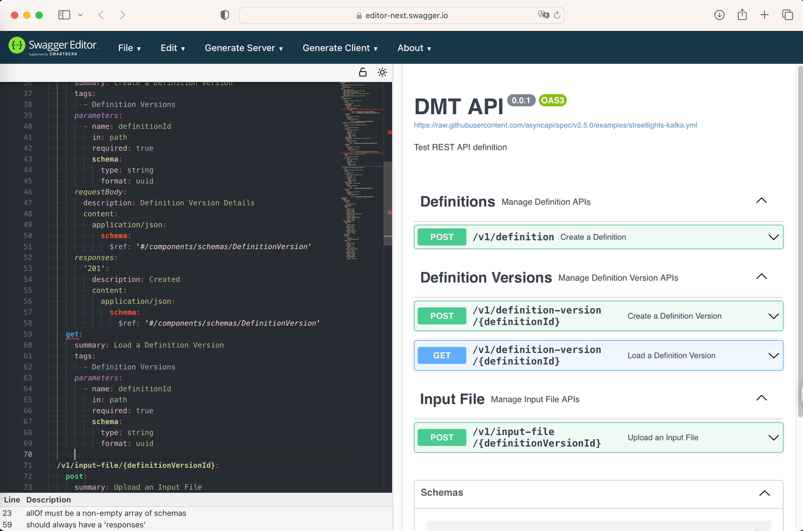
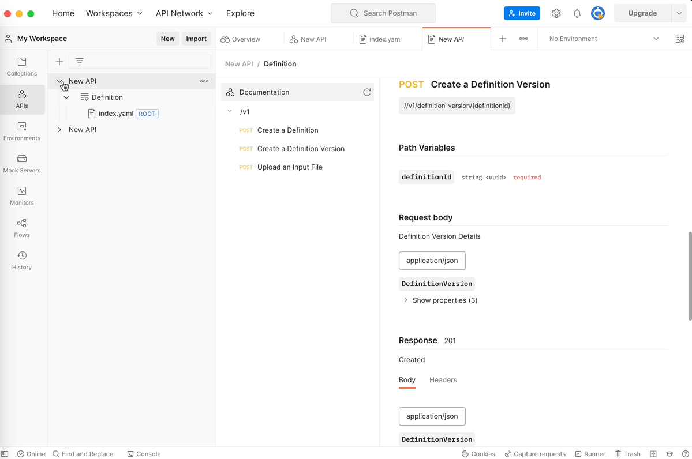
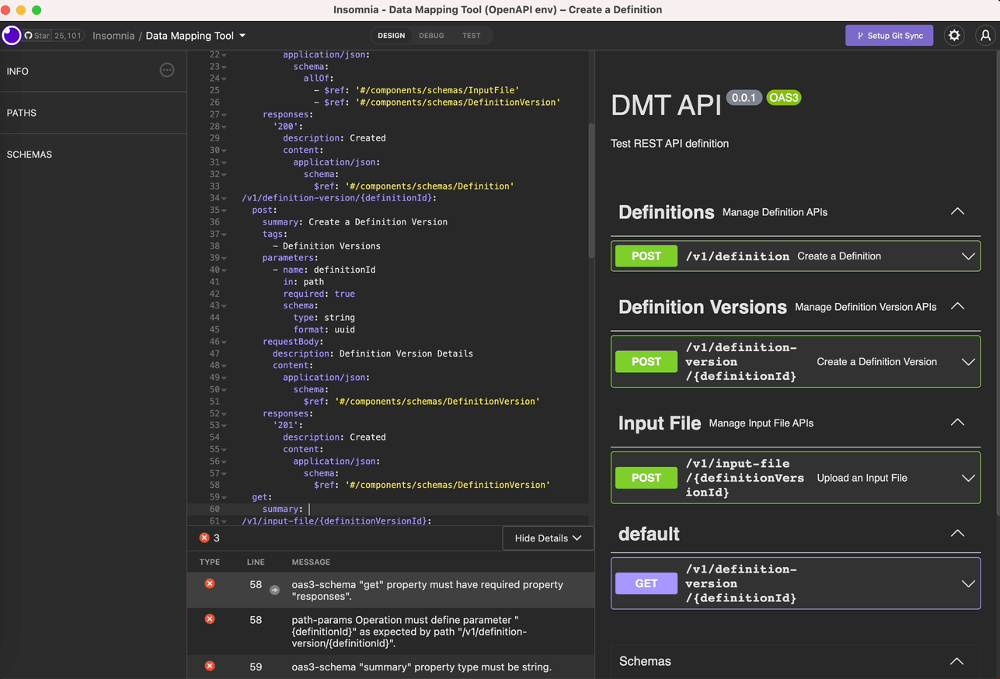
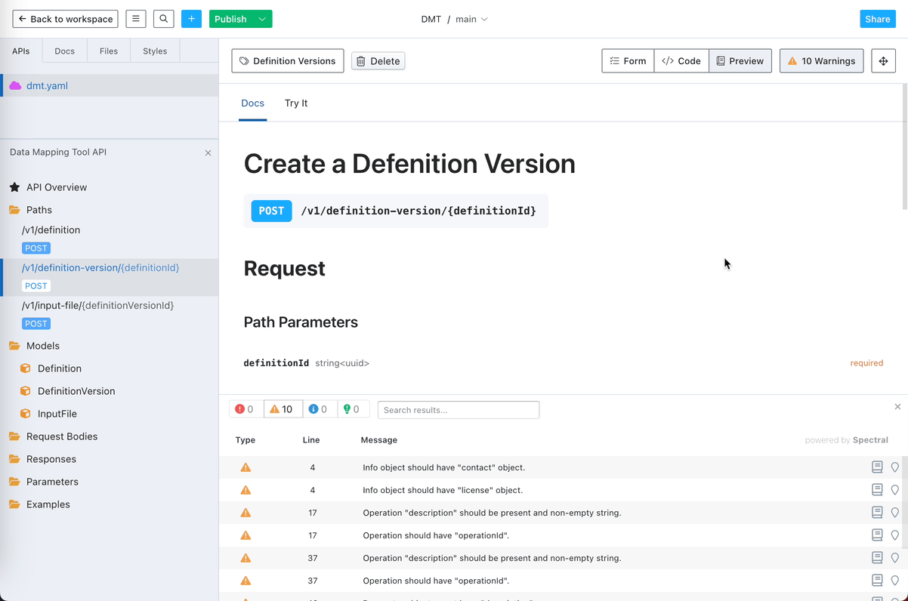
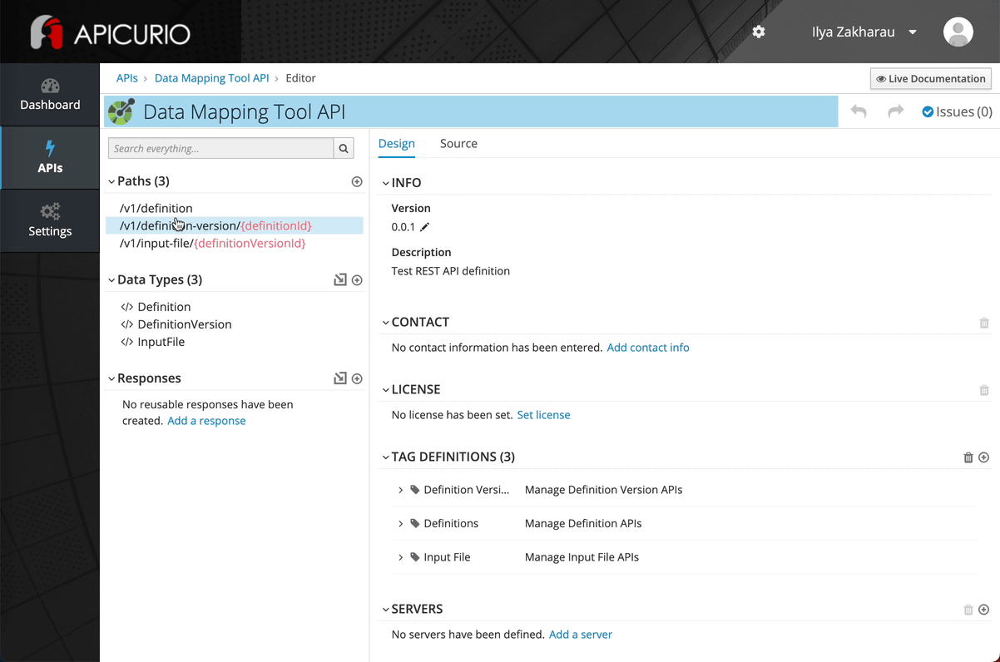
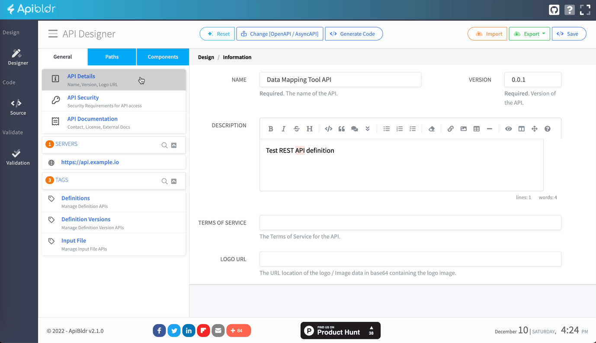

API Design Tooling

This article is a part of the API Design series, where I will review several API design tools and summarize my experiences. There are the following criteria I use in selecting and evaluating the tools:
- it is free: either open source or a free plan of a paid product
- out-of-the-box functionality is considered only: no plugins
- both web and desktop products are considered
- it allows designing REST API definition in OpenAPI 3.x with JSON/YAML (low-code), UI means (no-code), or a combination of both
- code generation functionality is not required as there are several 3rd party libraries to do that
I am not promoting, just expressing my honest opinion. But I might have my favorites. Also, I will describe these tools at the moment of December 2022.
Low-code tools
Low-code means that you can design an API in a code editor but not using Java, Python, or another programming. There is a higher-level language, usually called a Domain-Specific Language (DSL). OpenAPI is such a DSL used in the API design tools.
Swagger Editor
It is a default option for designing API with the OpenAPI specification. OpenAPI is formerly known as Swagger until version 3.0. Swagger Editor comes from the company that founded that initiative.
Swagger Editor is available on a web browser and can run on a local machine. You need Node.js, an NPM package manager, and a few trivial command-line manipulations for the latter.

It works with both YAML and JSON, which is very convenient. You can define API components via UI forms, so we are stepping on the no-code grounds. However, UX could be better there.
One of the most significant advantages is that you can immediately generate client and server-side code for multiple programming languages (Python, Go, Kotlin, Java, etc.) after finishing the design part. I will not judge the quality of the autogenerated code - not an expert. But this is an excellent option to deploy and test your APIs quickly.
The main disadvantage is the absence of autocomplete functionality in the code editor. For some people, like me, it is a crucial one. But fortunately, this will no longer be the case because of the available beta of an upcoming new version of the editor.
It keeps all the advantages of the current editor plus:
- AsyncAPI 2.x support: a big deal in the Event-Driven world
- dark/light theme: must-have in the modern times
- autocomplete support
- built-in documentation
The significant thing here is not autocompleting; it is the built-in OpenAPI documentation. It is available in the code editor. When something goes wrong, there is no need to look up anything in the documentation portal.

The only bad thing that happened to me in the beta was that my API definition, valid in the current Swagger Editor, needed to be corrected for no reason.
So if you are a novice in the API world, start with Swagger Editor (beta).
Postman
Postman is primarily known as a REST API client for testing. However, it is far more than that. It is a complete API Platform, not only for designing and testing APIs.
Postman supports many API formats, not limited to OpenAPI. Its editor supports JSON and YAML, along with auto-completion and error validation. Even though there is no immediate side-by-side preview, like Swagger Editor does, it generates fancy-looking API documentation.

The only disadvantage is that you must log in to your workspace in Postman. That is not a big deal, but running API requests without login is possible.
Beyond that, Postman provides a lot more: create a mock server, test your API endpoints, automate your test, sync with a remote Git repository, deploy your API, etc. It even can generate server-side code. But the number of supported programming languages is less than in Swagger Editor.
If you are already familiar with Postman, I recommend using it for API design.
Insomnia
Insomnia is a Postman's counterpart, also developing from an API client to an API Platform. I used it a few years ago to build and validate end-to-end API scenarios. And for me, Insomnia was more friendly for beginners and seemed more straightforward than Postman.
Now Insomnia also provides the possibility to design an OpeAPI definition, debug, and test it. From the design perspective, there is a code editor part on the left and a Swagger UI preview part on the right. API is defined with YAML, and the preview displays every change. The tool has good error validation but lacks autocomplete.

I recommend using something other than Insomnia when following the API design-first approach. And only then come back to debug and test. Insomnia's rich test and debug functionality becomes less relevant in this case as you need to generate the API layer and run a web server elsewhere.
I am talking about a free version of the product. The paid enterprise might have that functionality, but that is beyond my current experience.
An ideal use case for Insomnia: you already have a REST API service with OAS definition, which you can import, debug, and run tests. Meanwhile, you can adjust some documentation attributes in OAS.
No-code tools
No-code means you can design API with the help of UI components rather than writing some code in the code editor.
Stoplight
Stoplight is an enterprise-level API Platform with impressive functionality. It also allows designing API with a free plan. Even though that free plan has some limitations, it is enough to develop a RESTful API.

You can edit your API definition as JSON or YAML in the code editor or configure it via the UI form. And then see the result with the preview. Altogether it may seem too complex, but Stoplight has the best user experience (UX) I have seen in the API-design tools.
You can only build API with a technical background. Even with no-code configuration, you'd better know OpenAPI spec anyway. API design with fancy UI is more fun, for sure. But not so productive compared to an advanced code editor in the right hands.
There is a bunch of details that largely contribute to what is called "developer experience." In error validation, there is a "done-it-right" example. You can change the order of your API paths in the navigation pane. You can create a Model by generating a JSON file into a JSON schema. And these are only a few.
When your API is ready, you can publish it in a developer portal. You can configure mock API requests, so other users will see your API documentation and try to use it. You can publish different versions of APIs and search across multiple portals. Overall, developer portals are another big topic I might cover someday. Stoplight handles that greatly, but this does not benefit you with the free plan.
So if you want to engage in API design without studying OpenAPI the hard way by making your hands dirty in the code editor, then Stoplight is the right choice.
Apicurio Studio
Apicurio is a bunch of open-source products for API design and management. My focus is on Apicurio Studio, which deals with designing API with no code.
The "open source" label defines both strengths and weaknesses of this product. It neither does have a fancy UI nor multiple features to simplify the life of an API designer. But it is free to use: you can either use it on the Apicurio website or run it on your server with no charges.

Apicurio supports two configuration modes: Design for no-code users and Source ones who prefer code editors. Compared with Stoplight, Apicurio supports the same RESTful API configuration process. As they both follow the OpenAPI specification, it is challenging to build something extraordinary there. Apicurio looks less user-friendly and only provides a few additional services (remember, it is free).
It also does not have a built-in preview. Instead, it uses Redoc, another great open-source tool, to generate API documentation.
If you need to scale the API design approach in your organization but are not willing to pay money, then it is the right choice for you. Just consider the possible risks that come with open source. Remember, the good thing is that OpenAPI is the industry standard nowadays, so you can take your API schemas and migrate them to other tools.
Apibldr
Apibldr is a free online tool (free does not mean open source) to design OpenAPI and AsyncAPI definitions. The latter is a big deal that is not very common. Of six tools, only the beta of Swagger Editor and Apibldr work with AsyncAPI.

From a UX perspective, it is something between Stoplight and Apicurio. You only have to define your Models in a JSON schema format; there are no other options, so that does not entirely stick with the no-code concept.
Apibldr also allows code generation for the client and server sides. Again, I am not an expert, but it seems that it uses the swagger-codegen library for that purpose. So it is up to you whether to use it or not.
My main concern is that Apibldr's GitHub looks abandoned. I realized that the developers focus on RestCase, a more enhanced API tool that uses Apibldr's UI. Not sure about its future, but for now, it is a good tool to open and start designing API in your web browser.
What tool do I choose?
I choose Postman to design API for my current side project. I am excited to learn more about that tool and its outstanding infrastructure. I am advanced enough to use just a code editor, so I don't need a no-code solution here.
But I will keep my eye on another API tooling as one I may come up with in the next part of the API design tools overview.
Take care
Ilya
Image by Merlin Lightpainting from Pixabay